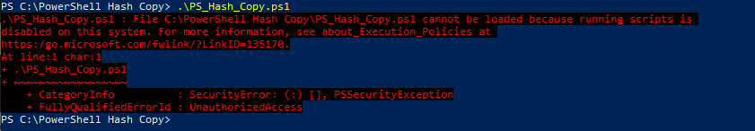
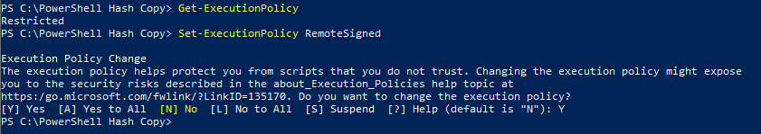

Windows / PowerShell batch copy from zips DE Version
Ich wurde einmal gefragt um einen Kopiercode vorzubereiten, der die Hashes nach jeder Kopie vergleicht und sie zur Logdatei speichern. Um meine PS Fähigkeiten zu verbessern, habe ich mich für die Verwendung dieser MS-Skriptsprache entschieden.
Nachdem ich ein paar erste Codezeilen geschrieben hatte, wurde ich mit dieser Rückmeldung begrüßt:

Wenn wir die Ausführungsrichtlinie mit Get-ExecutionPolicy untersuchen, können wir bemerken, dass es "Restricted" ist. Um das zu ändern, mussen wir PS als Administrator starten und Set-ExecutionPolicy RemoteSigned ausführen. "RemoteSigned" ist die Standardausführungsrichtlinie für die Windows-Serverrechner:

Das Skript akzeptiert nur zwei Argumente, den Quellpfad als erstes und den Zielpfad als zweites.
Sie können absolut oder relativ zum aktuellen Arbeitsverzeichnis sein. Der erste Teil des Codes prüft, ob genau zwei Argumente angegeben wurden und ob der Quellpfad existiert.
Anschließend sind die beiden Logdateien erstellt, ob sie noch nicht da sind. Danach werden die Grundlegende Variablen aus den angegebenen Argumenten mit den Pfaden und auch die Integervariable für die Fehleranzahl initialisiert. Am ende wird das Zielverzeichnis erstellt, wenn Test-Path gescheitert ist, was zeigt an, dass es nicht existiert.
Die haupt foreach Schleife ist so eingestellt um jedes Objekt unterwegs zu nehmen, was beduetet sie jedes Verzeichnis oder jede Datei als vollständiger Pfad züruckgeben.
Im solchen Fall überprufen wir zuerst ob das Objekt ein Verzeichnis ist ($object.PSIsContainer -eq $true) und wir erstellen es wenn das wahr ist, andernfalls müssen wir uns um die Datei kümmern.
Wir Get-FileHash aus der Quelldatei und bereiten den vollständigen Pfad für die neu Kopie vor. Wenn die Kopieoperation erledigt ist, dann wird der Hash für die neue Datei berechnet und beide werden verglichen. Wenn eine Nichtübereinstimmung auftritt, dann werden wir daüber informiert und alles wird wie jeder Schritt von diesem Code eingeloggen, aber Fehlern sind zusätzlich separat in hashCopyError.log Datei gespeichert. Endlich werden wir versichert ob die Kopie mit dem Hash überprufung richtig verlaufen ist oder ob Hash-Ungleichheiten aufgetreten sind.
if($args.count-lt2){Write-Output"Not enough arguments provided, terminating."exit}elseif($args.count-gt2){Write-Output"Too many arguments provided, terminating."exit}elseif(-not(Test-Path-Path$args[0])){Write-Output"Source path doesn't exist, terminating."exit}$logFile=".\hashCopy.log"if(-not(Test-Path-Path$logFile)){New-Item($logFile)}$errorLogFile=".\hashCopyError.log"if(-not(Test-Path-Path$errorLogFile)){New-Item($errorLogFile)}$errorsCount=0$sourcePath=(Get-Item($args[0])).FullName$sourcePathLen=$sourcePath.LengthWrite-Output"Source path: $sourcePath"Write-Output"Source path length: $sourcePathLen"$destPath=$args[1]$destPathLen=$destPath.LengthWrite-Output"Destination path: $destPath"Write-Output"Destination path length: $destPathLen"if(-not(Test-Path-Path$destPath)){MKDIR$destPath}foreach($objectinGet-ChildItem-Path$sourcePath-Recurse){if($object.PSIsContainer-eq$true){$newObject=$destPath+$object.FullName.substring($sourcePathLen)MKDIR$newObject}else{Write-Output"Calculating hash for the file:"Add-Content$logFile"Calculating hash for the file:"$objectHash=Get-FileHash$object.FullName-AlgorithmSHA256Write-Output"Hash: $objectHash"Add-Content$logFile"Hash: $objectHash"$newObject=$destPath+$object.FullName.substring($sourcePathLen)Write-Output"Starting copy of the file.."Add-Content$logFile"Starting copy of the file.."Copy-Item-Path$object.FullName-Destination$newObject$newObjectHash=Get-FileHash$newObject-AlgorithmSHA256Write-Output"New object: $newObject"Write-Output"New object hash: $newObjectHash"Add-Content$logFile"New object hash: $newObjectHash"if($objectHash.Hash-eq$newObjectHash.Hash){Write-Output"Hashes are equal!"Add-Content$logFile"Hashes are equal!`n"}else{Write-Output"Hashes are NOT equal!"Add-Content$logFile"Hashes are NOT equal!`n"Add-Content$errorLogFile"Hash: $objectHash"Add-Content$errorLogFile"New object hash:: $newObjectHash"Add-Content$errorLogFile"Hashes are NOT equal!"$errorsCount++}}}if($errorsCount-eq0){Write-Output"No hash mismatches occured."}else{Write-Output"Hash mismatches occured: $errorsCount. Check the hashCopyError.log file."}